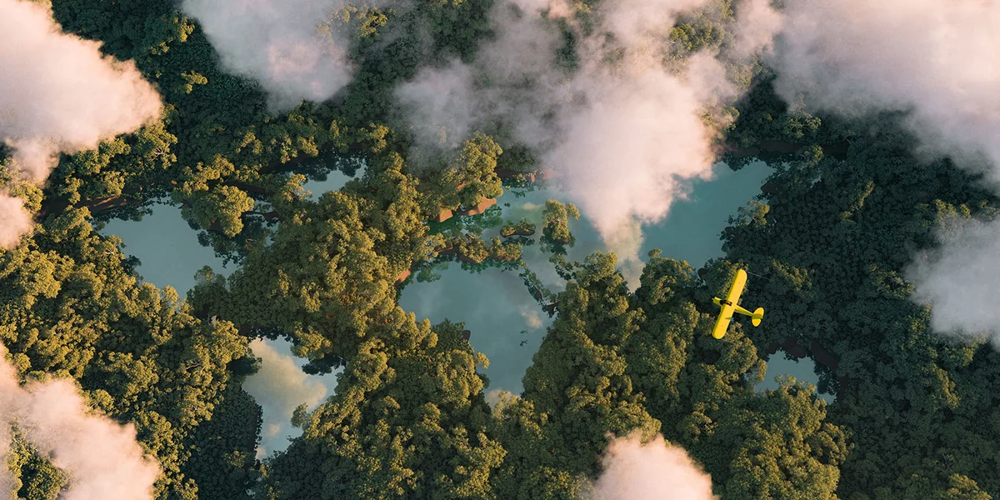

Introduction
An ecosystem refers to a functional unit of nature in which living organisms interact among themselves as well as with the surrounding physical environment. Ecologists look at the entire biosphere as a global ecosystem. Besides, the forest ecosystem is a part of the terrestrial ecosystem.
It, however, may vary largely in size i.e. from a small pond to a sea or a large forest. Usually, these are self-sustaining. We can divide the ecosystems into two broad categories, namely, terrestrial ecosystem and aquatic ecosystem.
The terrestrial ecosystem includes desert, grassland and forest ecosystem, whereas pond, lake, wetland and river ecosystem are parts of the aquatic ecosystem.
Biodiversity
Forests are biologically diverse systems, representing some of the richest biological areas on Earth. They offer a variety of habitats for plants, animals and micro-organisms. However, forest biodiversity is increasingly threatened as a result of deforestation, fragmentation, climate change and other stressors.
The Importance of Forests
We all rely on forests. They generate the oxygen we breathe, provide water to quench our thirst and livelihoods to some 1.6 billion people worldwide. They play a critical role for a healthy climate, and ultimately, for our survival. Yet, they continue to be under threat. They also support local communities by providing resources like food, medicine, and materials.
Protecting Forests
We are fighting to protect forests around the globe from destruction—and set them on a path to restoration. Working together with Indigenous Peoples, allies, and supporters like you, we’re calling out the industries and companies destroying our forests, and the governments who have failed to protect them.
Forests help stabilize the climate, sustain a diversity of life, and provide economic opportunity. They are vital to the livelihoods of many Indigenous Peoples and rural communities.